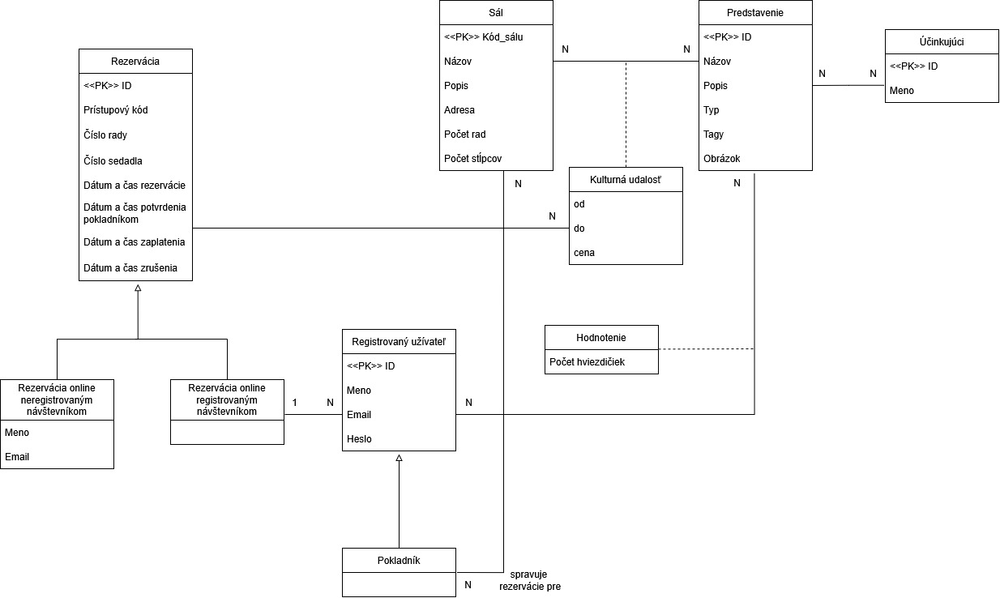
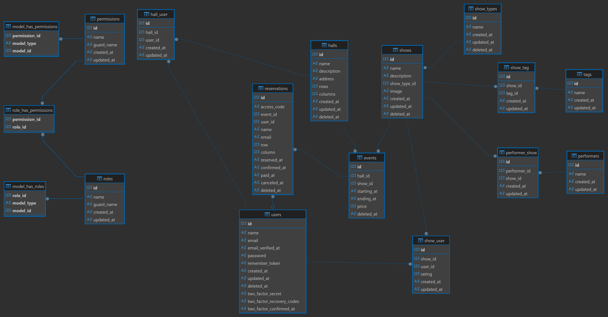

| Heslo | Role | |
|---|---|---|
| admin@gmail.com | password | Administrátor |
| cashier@gmail.com | password | Pokladník |
| editor@gmail.com | password | Redaktor |
| normal@gmail.com | password | Bežný uživateľ s účtom |

| Use case | Controller |
|---|---|
| Vytvoriť rezerváciu bez registrácie | Public/ReservationController |
| Registrovať účet | Auth/RegisteredUserController.php |
| Dokončiť registráciu účtu | Auth/RegisteredUserController.php |
| Vyhľadávať kultúrne udalosti | ShowController |
| Prezerať kultúrne udalosti | ShowController |
| Prezerať svoje rezervácie miest | User\ReservationController |
| Prezerať voľné miesta kultúrnej udalosti | EventController |
| Upraviť svoj profil | User/ProfileController |
| Vytvoriť rezerváciu | Public/ReservationController |
| Spravovať svoje hodnotenia predstavení | RatingController |
| Spravovať rezervácie pre vybrané sály | ReservationController |
| Potvrdiť rezervácie | ReservationController |
| Spravovať všetky sály | HallController |
| Spravovať všetky predstavenia | ShowController |
| Spravovať všetky kultúrne udalosti | EventController |
| Spravovať všetkých používateľov | UserController |


mysqldump -p iis > kino.sqlnpm run buildDB_HOST, DB_DATABASE, DB_USERNAME, DB_PASSWORDAPP_URL na doménu EndoryAPP_ENV=production, APP_DEBUG=false na produkčný režimPri vývoji bol použitý framework Laravel spolu s vue starter kit: bližšie informácie z dokumentácií od Laravelu
composer installnpm installcp .env.example .envAPP_URL=http://localhost:8000DB_CONNECTION, DB_DATABASE, DB_USERNAME, DB_PASSWORD podľa vlastných hodnôtAPP_KEY pomocou: php artisan key:generatephp artisan migrate:fresh --seedcomposer run devPri pridaní nového druhu predstavenia sa položky v navigačnom paneli (navbar) neaktualizujú okamžite. Z dôvodu cacheovania sa zmeny prejavia po 1 hodine.